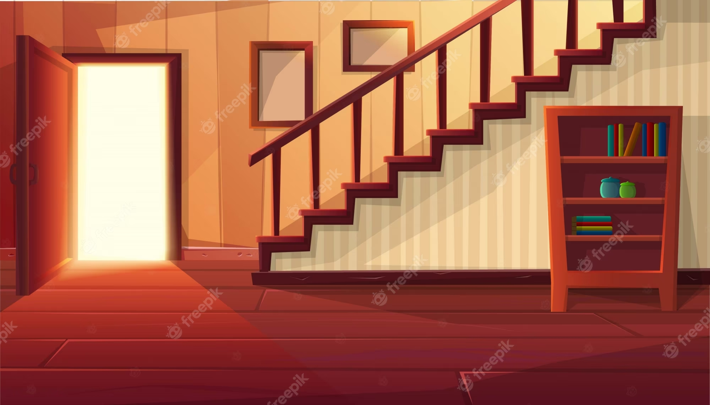
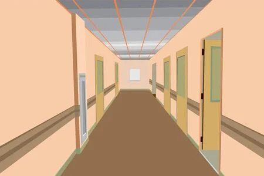

<p dir="ltr" style="line-height:1.38;margin-top:0pt;margin-bottom:0pt;" id="isPasted"><span style="font-size:10.5pt;font-family:Arial;color:#414141;background-color:#ffffff;font-weight:400;font-style:normal;font-variant:normal;text-decoration:none;vertical-align:baseline;white-space:pre;white-space:pre-wrap;">Prendre les escaliers au rez-de- chauss&eacute;e ou le couloir?</span></p><p><a href="suite11.html"></a></p><p><a href="suite12.html"></a></p><p><br></p>